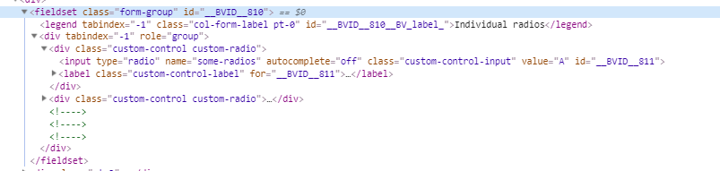

Responsiveness in CI
I not saying that the Responsiveness of the system isn't fit for purpose - but maybe its not.
- we haven't done any testing with real users
- we don't have any devices
- thats been ok to date but Patient recorded forms means it has to actually work properly
- there is an overlap with the other projects that suggests what we do for SmartCare might be useful for CTF and INPDR
Other projects
- I would like to have the compiler create a 2nd version of the form with clean markup for single column layouts - just slapping some more hacked style is never going to work well
- And a clean stylesheet so I can reverse the colours out and give the user options to make the UI work for them
- And present the questions one by one on suitable forms
That would suggest that we style (for example) radio buttons to be resizeable, change colour and remain readable to screen readers
- Bootsrap 3 was released in 2013 and worked finished on it in 2016. I could get a 5 year old plugin to replace the radio buttons and allow them to change colour, but they aren't going to be accessible.
Bootstrap 5 is being released this year
- BootstrapVue does this out of the box
- There is a real chance we are just going to dump more technical debt on put of technical debt and end up supporting poor solutions

This the markup that is most accessible to screen reader - radio buttons wrapped in a fieldset, one label per button and associated with
This is our markup today - orphan label,
Clinical Insight Solutions
WCAG 2.0 has 3 levels of adherence. 'A' is the easiest to pass but even Angular UI and Bootstrap 3 both fail.
We have a challenge with the progressive disclosure fields
Image uploads before saving
Validation is invoked on page loading not Touch
Colours - check colour blind (rag)
Font sizes + Margins - bumping these up could cause issues with the Form layouts and we will see less on screen
Provide better alt tags
Require better format on tables
Useability
Cleaned down interface for Patient Portal which allows us to have a much cleaner and lighter UI tailored for devices likely to be used by Patients.
This should be built from the ground up rather than be version of our standard interface with bits switched off/styled out.
Responsiveness
What our applications do?
CFView resizes down to Tablet size with retracting menu.
Phone app responds to different sizes.
Responsive is difficult
We need to design and plan better before we code
We need to accept that elements are flexible